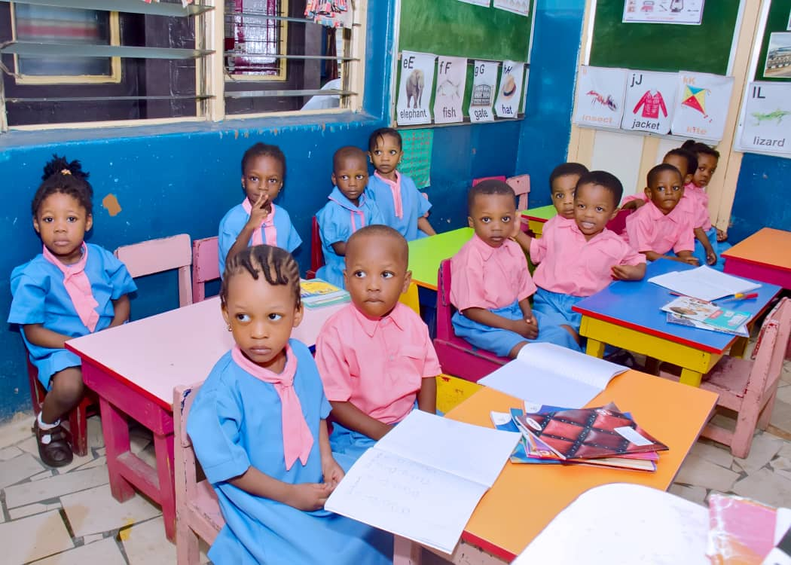
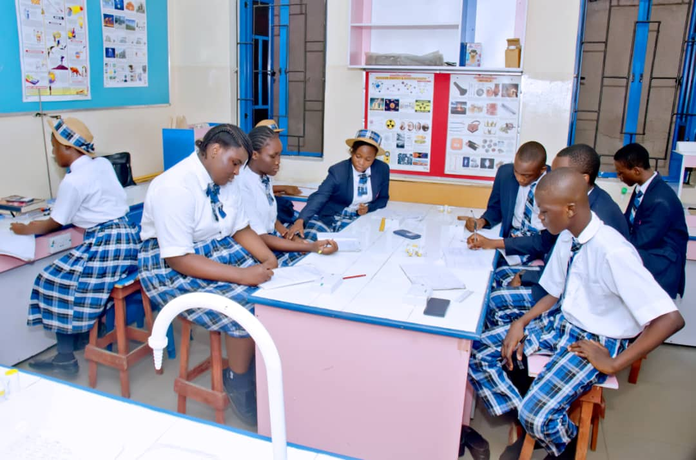

A rigorous curriculum blended with character development — Play & Hard Work
Our curriculum seamlessly integrates the Nigerian National Curriculum with global best practices. We focus on the "Total Child" concept — ensuring that every student is academically sound, morally upright, socially confident, and prepared for the future.
At the primary level, we build a strong foundation in literacy, numeracy, and critical thinking. Our "learning through play" philosophy transforms complex concepts into joyful discoveries, nurturing curious and resilient young minds.

Our secondary program is designed for academic rigor and leadership development. Students are prepared for top-tier universities and global opportunities through a balanced focus on sciences, humanities, and vocational skills.

Differentiated instruction tailored to individual learning styles and paces.
Modern science labs, ICT hubs, and project-based assignments.
Football, athletics, music, drama, and annual inter-house competitions.